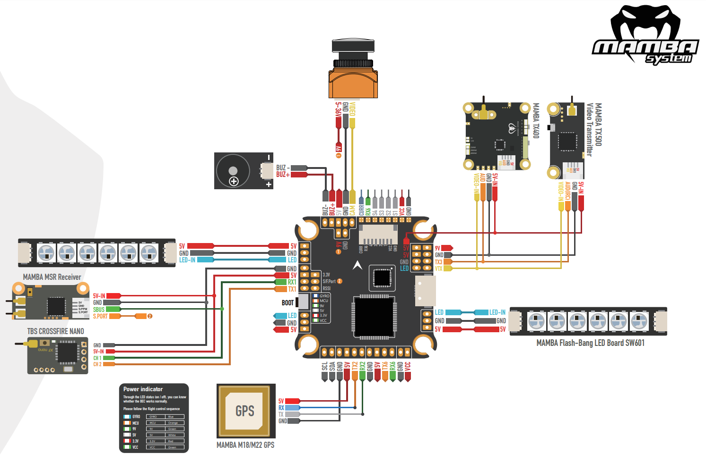

Mamba Basic F405 Flight Controllers¶
The Mamba Basic line of autopilots are produced by [Diatone](https://www.diatone.us).
Features¶
STM32F405RGT6 microcontroller
MPU6000 IMU
AT7456E OSD
4 UARTs
4 PWM outputs
Where to Buy¶
Pinout¶
UART Mapping¶
The UARTs are marked Rn and Tn in the above pinouts. The Rn pin is the receive pin for UARTn. The Tn pin is the transmit pin for UARTn.
Name |
Pin |
Function |
|---|---|---|
SERIAL0 |
COMPUTER |
USB |
SERIAL1 |
PPM/RX1/SBUS/TX1 |
UART1 (RC Input) |
SERIAL2 |
TX2/RX2 |
UART2 (Empty) |
SERIAL3 |
TX3/RX3 |
UART3 (Telem1) |
SERIAL4 |
TX4/RX4 |
UART4 (Empty) |
SERIAL6 |
TX6/RX6 |
UART6 (GPS) |
RC Input¶
The PPM pin, which by default is mapped to a timer input, can be used for all ArduPilot supported receiver protocols, except CRSF/ELRS and SRXL2 which require a true UART connection. However, FPort, when connected in this manner, will only provide RC without telemetry.
To allow CRSF and embedded telemetry available in Fport, CRSF, and SRXL2 receivers, the SBUS pin can also be configured to be used as true UART1 RX pin for use with bi-directional systems by setting the BRD_ALT_CONFIG to “1” so it becomes the SERIAL1 port’s RX input pin.
With this option, SERIAL1_PROTOCOL must be set to “23”, and:
PPM is not supported.
SBUS/DSM/SRXL connects to the PPM pin, but SBUS is not supported without an external inverter.
FPort requires connection to T1 and PPM(R1) via a bi-directional inverter. See [copywiki destination=”plane,copter,rover,blimp”].
CRSF also requires a T1 connection, in addition to PPM (R1), and automatically provides telemetry.
SRXL2 requires a connection to T1 and automatically provides telemetry. Set SERIAL1_OPTIONS to “4”.
Any UART can be used for RC system connections in ArduPilot also, and is compatible with all protocols except PPM (SBUS requires external inversion). See Radio Control Systems for details.
OSD Support¶
The Mamba F405 MK2 has an integrated OSD enabled by OSD_TYPE =` 1 (MAX7456 driver).
PWM Output¶
The Mamba F405 MK2 supports up to 4 PWM outputs. The pads for motor output ESC1 to ESC4 on the above diagram are for the 4 outputs. All 4 outputs support DShot as well as all PWM types.
The outputs are all in one group.
Channels within the same group need to use the same output rate. If any channel in a group uses DShot then all channels in the group need to use DShot.
Battery Monitoring¶
The board has a built-in voltage sensor. The voltage sensor can handle up to 6S LiPo batteries. An external current sense input is also provided.
The correct battery setting parameters are:
BATT_MONITOR = 3 for voltage only or = 4 if external current sense is also used.
BATT_VOLT_PIN = 11
BATT_VOLT_MULT = 11.0
BATT_CURR_PIN = 13
BATT_AMP_PERVLT depends on external current sensor used
Compass¶
The Mamba Basic autopilots do not have a builting compass, but you can attach an external compass using I2C on the SDA and SCL pads or refer to Compass-less Operation.
Firmware¶
Firmware for this board can be found here in sub-folders labeled “MambaF405US-I2C”.
Initial firmware load can be done with DFU by plugging in USB with the bootloader button pressed. Then you should load the “with_bl.hex” firmware. See Loading Firmware onto boards without existing ArduPilot firmware.
Once the initial firmware is loaded you can update the firmware using any ArduPilot ground station software. Updates should be done with the “.apj” firmware files.
[copywiki destination=”plane,copter,rover,blimp”]